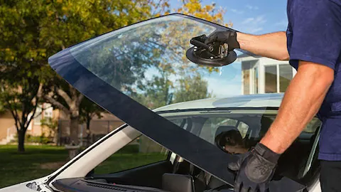
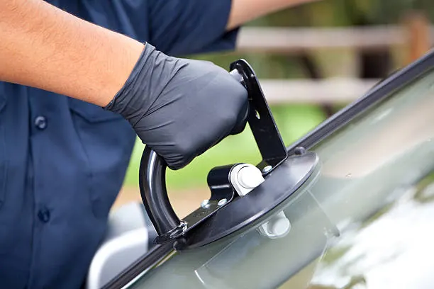
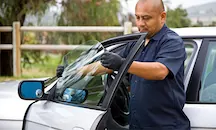
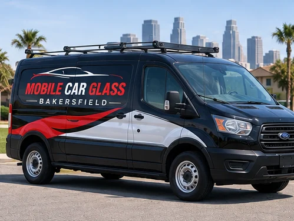
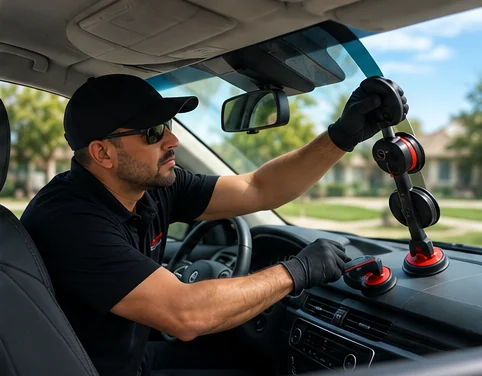
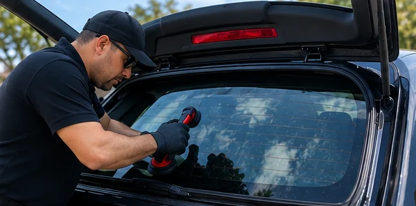
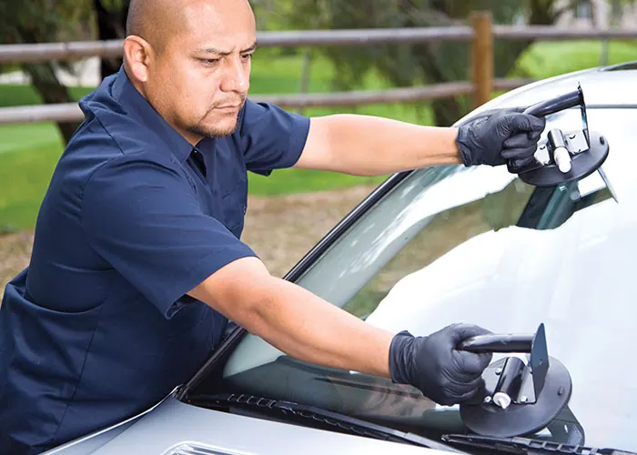

Auto Glass Services
Mobile Car Glass Bakersfield provides windshield replacement, auto glass replacement, and mobile service for drivers who need convenient glass work at home, work, or another suitable location.

Professional windshield replacement for vehicles in the Bakersfield area.

Replacement service for vehicle glass when your car glass is damaged.

Mobile car glass service for side and other vehicle glass needs.

Convenient mobile service designed around your location.
Our mobile units are fully equipped with all necessary tools to provide a professional windshield replacement in Bakersfield and all sourranding cities. Talk to us today and get a quick quote over the phone to have your windshield replacement and set up your appointment..
CAR GLASS REPLACEMENT
We provide mobile car glass replacement and windshield replacement in the city of Bakersfield and all nearby citieas as well. Get an timate today and book your appointment to have it replace.
MOBILE AUTO GLASS

We can come to your homme, office or work place and install the needed glass there. Our service is very convinience for your because you dont have want to drive with a shattered windows with a lot glass all over the seats. We got you covered. Lets us take care of your auto glass replacement needs. Call Today.

Auto Glass Replacement

CALL US NOW!
(661) 390-9282
We'll be happy to answer any questions.
HOURS OF OPERATION
Monday-Friday 7:00 am- 9:00 pm Saturday- 7:00 am - 12:00 pm Sunday- Appointment only
LOCATION
Bakersfield, CA 93311
We have been in the auto glass industry for more than 15 years. Our customers have been loyal to us because of the professional work and great customer service we provide to them. We are a family own business and customer satisfaction is our number one priority. We provide OEM equivavlent auto glass such as driver side window or passanger side window. Also ventu glass, quarter glass, and back glass. If you are not sure which window you need just give us a call and we will help you identify it.
If you're living in Bakersfield, California, and looking for reliable auto glass replacement services, you're in luck! Our company has been providing top-notch auto glass and windshield replacement services in the area for over 15 years. Our team of skilled technicians is dedicated to ensuring that you receive the best possible service, and we're proud to offer free mobile service within the Bakersfield area.
Our fully equipped mobile units allow us to perform auto glass replacement services on-site, wherever you may be. Our technicians have everything they need to replace your windshield or car glass quickly and efficiently. Additionally, we vacuum shattered glass after completing the replacement, ensuring that your vehicle is safe and clean. We take pride in providing our customers with premium quality glass that meets or exceeds OEM equivalents. This means that you can trust us to use the highest quality glass available to replace your windshield or car glass. Our commitment to safety also means that we only use safety laminated windshields and tempered glass windows, which meet or exceed safety standards. This ensures that your vehicle is safe to drive and that you and your passengers are protected in the event of an accident.
In addition to our standard windshield replacement services, we also offer specialized services such as rain sensing windshields and lane departure warning system windshields. Rain sensing windshields use sensors to detect rain and adjust the speed of your windshield wipers accordingly. This can improve visibility during inclement weather, making your drive safer and more comfortable. Lane departure warning system windshields use sensors to detect when your vehicle is drifting out of its lane, alerting you with an audible warning or vibration. This can help prevent accidents caused by distracted or drowsy driving.
We understand that having to replace your windshield or car glass can be a stressful experience. That's why we strive to make the process as easy and hassle-free as possible. Our free mobile service means that you don't have to take time out of your busy schedule to come to us. Instead, we come to you, wherever you are, whether that's at home, at work, or anywhere in between. Our goal is to make the process as convenient as possible, so you can get back on the road as quickly as possible. At our company, we're committed to providing our customers with the best possible service. Our team of skilled technicians has years of experience in auto glass and windshield replacement, and we use only the highest quality glass and materials. Whether you need a simple windshield replacement or specialized services like rain sensing or lane departure warning system windshields, we're here to help. Contact us today to learn more about our services or to schedule an appointment for mobile auto glass replacement in Bakersfield, California.
Give us a call — we're happy to answer any questions.
Call Now · (661) 390-9282